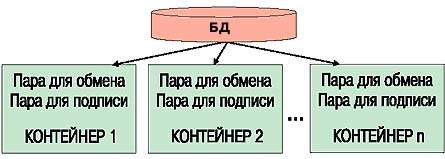
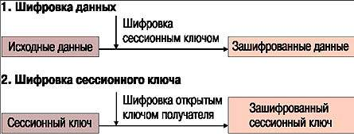
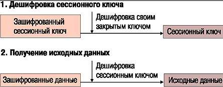
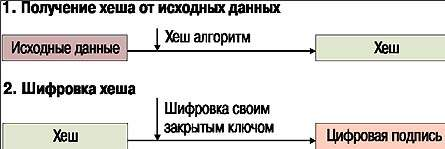
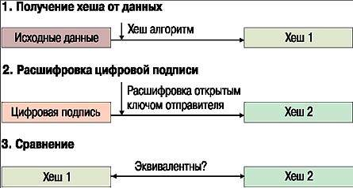

Чтобы
тайное не стало явным
ВИТАЛИЙ ЛИ
20.09.2001
В настоящее время многие
приложения используют для обмена данными открытые каналы связи, и прежде
всего Internet. Однако в ряде случаев, например в банковской и финансовой
сферах, требуется ограничить доступ к конфиденциальной информации,
передаваемой по таким каналам. При этом важно иметь возможность проверить, от
кого исходят принятые получателем конфиденциальные данные и не были ли они
искажены при пересылке. Для безопасной передачи конфиденциальных данных по
открытым каналам используется криптография.
Интерфейс CryptoAPI
В сфере защиты компьютерной информации
криптография применяется в основном для: шифрования и дешифровки данных; а
также создания и проверки цифровых подписей. (Прим. автора: в
русскоязычной литературе применяется термин «ЭЦП» – электронно-цифровая
подпись. В этой статье для краткости используется термин «цифровая подпись».)
Шифрование данных позволяет ограничить доступ к
конфиденциальной информации, сделать ее нечитаемой и непонятной для
посторонних. Применение цифровых подписей оставляет данные открытыми, но дает
возможность верифицировать отправителя и проверять целостность полученных
данных.
Для защиты информации специалистами Microsoft
был разработан интерфейс CryptoAPI, который позволяет создавать приложения,
использующие криптографические методы.
Структура CryptoAPI
В Crypto API существует понятие
«криптопровайдер» (Cryptography Service Provider, CSP). Криптопровайдер – это
независимый модуль, содержащий библиотеку криптографических функций со стандартизованным
интерфейсом. Криптопровайдер отвечает за реализацию функций интерфейса, а
также играет роль хранилища для ключей всех типов. Подобная архитектура
позволяет переходить от одного провайдера к другому с минимальными
изменениями исходного кода, так как интерфейс (т. е. сами функции) не
меняется.
В операционную систему Windows включен
криптопровайдер Microsoft RSA Base Provider.
Криптографические ключи
В CryptoAPI существуют ключи двух типов:
- сессионные ключи (session
keys
- пары открытый/закрытый ключ
(public/private key pairs).
Сессионные ключи. Это симметричные ключи, так как один и тот же ключ
применяется и для шифрования, и для расшифровки. Сессионные ключи меняются.
Алгоритмы, использующие сессионные ключи (так называемые симметричные
алгоритмы), – RC2, RC4, DES. Microsoft RSA Base Provider работает с
40-разрядными сессионными ключами.
Пары ключей используются в так называемых
асимметричных алгоритмах шифрования. Если шифрование выполнялось одним ключом
из пары, то дешифровка производится другим. Открытые (public) ключи могут
передаваться другим лицам для проверки цифровых подписей и шифрования
пересылаемых данных. Длина открытого ключа в Microsoft RSA Base Provider
составляет 512 разрядов.
Закрытые (private) ключи не могут быть
экспортированы; они используются для создания цифровых подписей и дешифровки
данных. Закрытый ключ должен быть известен только его владельцу.
Хранение ключей
Криптопровайдер отвечает за хранение и
разрушение ключей. Программист не имеет доступа непосредственно к двоичным
данным ключа, за исключением операций экспорта открытых ключей. Вся работа с
ключами производится через дескрипторы (handle).
В CryptoAPI ключи для шифрования/дешифровки и
создания/проверки подписей разделены. Называются они соответственно «пара для
обмена ключами» и «пара для подписи».
База данных ключей состоит из контейнеров, в
каждом из которых хранятся ключи, принадлежащие определенному пользователю.
Контейнер ключей имеет уникальное имя и содержит пару для обмена и пару для
подписи. Все ключи хранятся в защищенном виде.
По умолчанию для каждого пользователя создается
контейнер с именем этого пользователя. Можно создавать дополнительные
контейнеры и назначать им произвольные имена, которые обязательно должны быть
уникальными (см. Рисунок 1).
|

|
|
Рисунок 1. База данных криптографических ключей.
|
Работа с CryptoAPI
Ниже приводятся примеры работы с некоторыми
функциями CryptoAPI. Все примеры написаны на языке С++ в среде MS Visual C++
6.0. Приведены прототипы наиболее интересных функций с пояснениями. Чтобы не
перегружать читателя деталями, обработка ошибок в листинги не включена.
Названия функций CryptoAPI имеют префикс Crypt.
Как правило, все они возвращают результат типа BOOL – TRUE при успешном
завершении и FALSE, если произошла ошибка. В последнем случае для получения
сведений об ошибке необходимо вызвать GetLastError().
Прототипы функций описаны в файле wincrypt.h.
Для использования этих функций в свойствах проекта нужно определить константу
_WIN32_WINNT и задать ей значение 0x0400 (или больше). Данная константа
применяется в файле wincrypt.h для проверки версии Windows.
Для некоторых функций CryptAPI также требуются
библиотеки crypt32.lib и advapi32.lib.
Криптопровайдер
Прежде чем использовать какие-либо функции
Crypto API, необходимо запустить криптопровайдер. Делается это с помощью
функции CryptAc-quireContext:
BOOL CRYPTFUNC CryptAcquireContext( HCRYPTPROV* hCryptProvider,//дескриптор провайдера, out-параметр LPCTSTR pszContainer, // имя контейнера ключей LPCTSTR pszProvider, // имя провайдера DWORD dwProvType, // тип провайдера DWORD dwFlags // флаги )
Кроме инициализации криптопровайдера данную
функцию можно использовать для создания и удаления контейнеров ключей. Для
этого параметру dwFlags присваивается значение, соответственно,
CRYPT_NEW-KEYSET и CRYPT_DELETEKEYSET.
Функция CryptAcquireContext работает в два
этапа: сначала она ищет криптопровайдер по имени и типу, указанному в
аргументах, а затем контейнер ключей с заданным именем.
По окончании работы с криптопровайдером
необходимо вызвать функцию CryptReleaseContext (см. Листинг 1).
Работа с ключами
Генерация ключей. В CryptoAPI имеются функции для генерации ключей любого
типа. Функция CryptGenKey генерирует сессионные ключи и пары для обмена и
подписи на основе случайного числа.
BOOL CRYPTFUNC CryptGenKey( HCRYPTPROV hProv ALG_IG Algid DWORD dwFlags HCRYPTKEY* phKey )
Сессионные ключи можно сгенерировать также на
основе некоторого заданного значения (пароля) при помощи функции
CryptDeriveKey. Это стоит делать, например, в том случае, когда нужно
избежать пересылки сессионного ключа вместе с зашифрованными данными (см.
Рисунок 2). Получатель данных, зная пароль и алгоритм, может сам
сгенерировать сессионный ключ и с его помощью расшифровать данные (см.
Листинг 2).
|

|
|
Рисунок 2. Шифрование.
|
Получение дескриптора ключа. Дескриптор открытого ключа можно получить, вызвав
функцию CryptGet-UserKey.
Экспорт ключей. Операция экспорта выполняется при сохранении сессионных
ключей и при передаче ключей третьим лицам.
Двоичные данные ключа могут быть получены при
помощи функции CryptExportKey:
BOOL CRYPTFUNC CryptExportKey ( HCRYPTKEY hKeyToExport HCRYPTKEY hCryptKey DWORD dwBlobType DWORD dwFlags BYTE* pbData, // указатель на буфер DWORD* pdwDataLen ) // длина буфера
Поясним значения аргументов. Первый аргумент –
дескриптор экспортируемого ключа. Второй аргумент – дескриптор ключа, которым
шифруется экспортируемый ключ.
Открытые ключи экспортируются в незашифрованном
виде. В этом случае hCryptKey = 0.
При экспорте сессионных и закрытых ключей
необходимо их предварительно зашифровать. Аргумент hCryptKey должен содержать
дескриптор открытого ключа получателя.
При вызове с аргументом pbData = NULL функция
вернет необходимую длину буфера по адресу, на который указывает аргумент
pdwDataLen (см. Листинг 3).
После успешного завершения переменная
dwSessionKeyLen будет содержать действительную длину BLOB-структуры ключа.
Это значение необходимо сохранить для обратной операции – импорта ключа в
криптопровайдер.
Импорт ключей. Ключи импортируются функцией CryptImportKey:
CryptImportKey ( HCRYPTPROV hProv BYTE* pbData DWORD dwDataLen HCRYPTKEY hCryptKey DWORD dwFlags HCRYPTKEY* phImportedKey )
hCryptKey = 0 в том случае, если импортируемый
ключ был зашифрован асимметричным ключом или не был зашифрован вообще.
Если импортируемый ключ шифровали сессионным
ключом, то hCryptKey должен содержать дескриптор этого ключа.
По окончании работы с ключом необходимо для его
дескриптора вызвать функцию CryptDestroyKey(HCRYPTKEY hKey).
Шифрование и дешифровка
данных
В CryptoAPI для шифрования и дешифровки
используются и симметричный, и асимметричный алгоритмы.
Симметричный алгоритм менее надежен, но работает
намного быстрее, чем асимметричный. Поэтому в CryptoAPI применяется
комбинация алгоритмов. Данные шифруются с помощью симметричного алгоритма с
сессионным ключом, а сам сессионный ключ шифруется по асимметричному
алгоритму открытым ключом получателя. Дешифровка происходит в обратном
порядке: сначала закрытым ключом получателя дешифруется сессионный ключ,
затем этим сессионным ключом дешифруются сами данные (см. Рисунки 2 и 3).
|

|
|
Рисунок 3. Дешифровка.
|
Таким образом, расшифровать данные можно только,
имея закрытый ключ из той же ключевой пары, что и открытый ключ, которым
данные были зашифрованы.
Для шифрования и дешифровки применяется функция
(см. Листинг 4).
BOOL CRYPTFUNC CryptEncrypt ( HCRYPTKEY hKey, // дескриптор ключа для шифрования HCRYPTHASH hHash BOOL bFinal BYTE* pbData, // параметр [in, out DWORD* pdwDataLen, // параметр [in, out DWORD dwBufferLen )
Последний и предпоследний параметры являются
одновременно входными и выходными. Это означает, что зашифрованные данные
записываются поверх исходных в буфер pbData, а длина данных, соответственно,
в dwBufferLen.
Как и в случае с функцией Crypt-ExportKey,
CryptEncrypt позволяет предварительно определить необходимый размер буфера
под зашифрованные данные. Для этого нужно вызвать функцию с аргументами:
pbData = NULL; pdwDataLen = длина исходных данных.
Длину буфера функция вернет по адресу:
pdwDataLen.
Дешифровка данных производится аналогично
функцией CryptDecrypt.
Цифровые подписи
Цифровая подпись – это двоичные данные
небольшого объема, обычно не более 256 байт. Цифровая подпись есть не что
иное, как результат работы хеш-алгоритма над исходными данными, зашифрованный
закрытым ключем отправителя. Проще говоря, берем исходные данные, получаем из
них хеш и шифруем хеш своим закрытым ключом (с помощью асимметричного
алгоритма).
Полученные в результате шифрования хеша двоичные
данные и есть наша цифровая подпись (см. Рисунок 4).
|

|
|
Рисунок 4. Создание цифровой подписи.
|
Получатель, чтобы удостовериться, что данные
присланы именно от нас и не были искажены, производит следующие операции:
- получает хеш от данных
(данные остались открытыми);
- расшифровывает нашу цифровую
подпись при помощи нашего открытого ключа;
- сравнивает свой хеш и
результат дешифровки. Если они эквивалентны, значит, данные были
подписаны именно нами (ну, по крайней мере, нашим закрытым ключом, см.
Рисунок 5).
|

|
|
Рисунок 5. Проверка цифровой подписи.
|
Подобный алгоритм позволяет любому лицу
проверить подлинность подписи отправителя. Напомню, что открытый ключ
отправителя, с помощью которого собственно и производится проверка,
распространяется (как правило) свободно.
Для работы с цифровыми подписями используются
функции CryptCreate-Hash, CryptHashData, CryptSignHash, CryptVerifySignature,
CryptDestroy-Hash.
Создание цифровой подписи. Процесс создания подписи состоит из следующих этапов:
- создание хеш-объекта
функцией CryptCreateHash;
- наполнение хеш-объекта
данными (CryptHashData);
- подписание хеша
(CryptSignHash);
- разрушение хеш-объекта
(Crypt-DestroyHash).
Аналогично функциям CryptEncrypt, проверка длины
буфера для подписи производится вызовом функции CryptSignHash с нулем вместо
указателя на данные. Как и у функции CryptEncrypt, указатели на данные и их
длину являются параметрами типа [in, out] (см. Листинг 5).
Проверка цифровой подписи. Проверка подписи (см. Листинг 6) выполняется так:
- создается хеш-объект
функцией CryptCreateHash;
- хеш-объект наполняется
данными (CryptHashData);
- подпись расшифровывается и
результат сравнивается со «своим» хешем (CryptVerifySignature);
- хеш-объект разрушается
(CryptDes-troyHash).
ВИТАЛИЙ ЛИ – разработчик ПО в компании «Киберплат.Ком». С ним можно связаться по
адресу: [email protected].
|